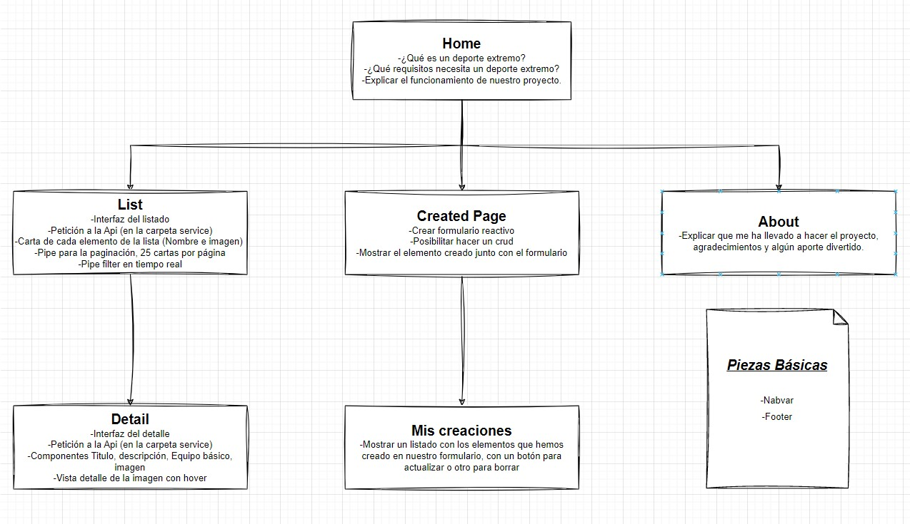

<div class="block">
    <h2 class="block__h">proyecto extreme sport</h2>

    <p class="block__p">Mi proyecto actualmente usa una arquitectura basada en dos grandes pilares, por un lado, tenemos un listado que permite recuperar de mi mokapi una petición con todos los deportes, en vistas donde se detalla el título del deporte, la imagen y el autor que creo ese deporte. Además tenemos un pipe para la paginación, el procedimiento es traer todos los deportes para después ir mostrándolos de 10 en 10.</p>

    <p class="block__p">Al hacer click sobre la ficha del producto vamos a la vista detalle que se encuentra un nivel por debajo en la arquitectura. Cuando vamos a la vista de detalle se hacen dos peticiones simultaneas y por un lado se recupera el detalle del deporte y por otro el de los autores, se compara el campo autor de ambas peticiones y si coincide se muestran ambos detalles en la misma vista.</p>

    <p class="block__p">En la creación de deporte tenemos un formulario que nos sirve tanto para crear como para editar en función de si tenemos los datos de la ficha o no, además tiene un doble data bindin que permite previsualizar la ficha del deporte mientras rellenamos los campos. Tenemos un botón de administrar deportes que nos lleva a un listado donde tenemos todos nuestros deportes con un select donde podemos filtrar por autor el listado y dos botones por ficha, uno para crear y otro para editar.</p>

    <p class="block__p">Por último tenemos la página de about donde intentare dejara una reseña para el corrector y tutor ;)</p>
</div>

    

